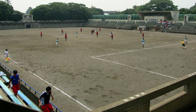
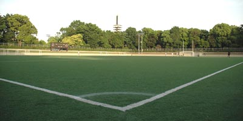
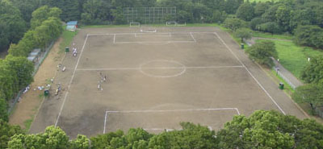

Komazawa Olympic park.
|


Ground No1

Ground No2 |
|
|
- Surface: 3 dirt pitches in Komazawa Olympic park.
- Facilities: Showers & toilets available.
- Parking: Carpark next to sub-ground.
- Location: 10 minutes walk from Komazawa Daigaku Station on the shin-Tamagawa line.(5 mins from Shibuya)
MAP or for Yahoo driving directions, CLICK HERE
- Rules: When teams & supporters leave after the match, they will make sure to clean up around the ground and changing rooms, removing all rubbish.
|

Sub Ground |
|
|
|